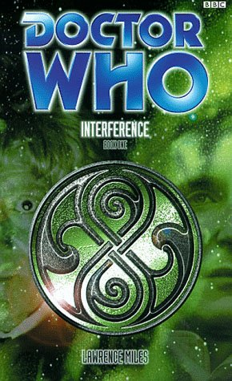

|
Interference Book 1: Shock Tactic
|
BASIC PLOT DOCTOR COMPANIONS With the Third Doctor: Sarah Jane Smith MATERIALISATION CIRCUIT Pg 34 On Earth, possibly Swanley, August 1996. Pg 267 The Third Doctor and Sarah Jane arrive in a narrow alleyway on Dust in the 38th century. PREPARATORY READING CONTINUITY REFERENCES Pg 1 "I.M. Foreman was sitting on the grass at the top of the hill." I.M. Foreman (as if you didn't know) allegedly owned the junkyard in which the whole thing began, all those distant years ago. Pg 3 "It's a universe-in-a-bottle" Goddess, where do we begin? This is the principle behind Dead Romance and the net cause of most of the problems in The Ancestor Cell, although no one saw that coming. The 'bottle' theory, in which the NAs and the BBC novels happened at different levels of reality, and the TV programme again (we infer) made such a terrible mess of continuity that unsnarling it's a nightmare. Even Lawrence Miles gets it wrong, maybe, as we'll see later. Suffice it to say that if you haven't dealt with the 'bottle problem', you must be a new-timer. "The way I was before. Only shorter." The Seventh Doctor. The Eighth is possibly watching one of the NAs happening, as - it's implied but never made clear - the NAs occurred in the Inner 'Virgin' bottle, but not in the outer 'BBC' one. Maybe. "I think the Time Lords are after some kind of escape route." Dead Romance. Pg 4 "Not that I should be getting involved in future events anyway." Consistent with the Doctor's approach in Alien Bodies. Pg 5 "Typical Time Lord. Always trying to fiddle with the props." Sounds like the process of filming the programme, in a way. Which, in a way, is what this book is all about. Pg 6 "'Sam was a good friend of mine,' he explained. 'Someone who helped me a lot, after my last regeneration.'" The Eight Doctors, although it's a bit of a bumping up of her part in that novel, given that she only appeared at the very beginning and the very end of it. "No. It's a bit of coincidence, though. Fitz was talking about The Lord of the Rings the first time I... well, never mind. Not important." 'Met him' are the missing words, and this was in The Taint, but of course. Pg 7 "Sam was a schoolgirl from London. That was what she was supposed to be, anyway. You remember London, don't you?" The Eight Doctors, and a reference to the I.M. Foreman junkyard in An Unearthly Child. "'Her timeline was altered,' the Doctor went on. 'Adjusted. By some very bad people.'" Alien Bodies and Unnatural History. The very bad people are Faction Paradox. Maybe... "They shaped her into the perfect travelling companion." A line from Alien Bodies. "Or maybe I was playing games with her timeline, and they were just the ones who made me realise it." Unnatural History again. "This isn't going to be one of those stories where everybody meets versions of themselves from parallel universes, is it?" Inferno, obviously, but possibly also a slightly snide reference to Unnatural History. "Only I've had enough of that kind of thing recently. What with the bottle and everything." Dead Romance, and the bottle theory again. Pg 11 "Extract from the transcript of the BBC 2 documentary Seeing Eye." Although Seeing Eye is a genuine BBC 2 programme, this is also possibly a reference to Seeing I, the novel. But maybe not. "Programme title: 'Voodoo Economics'." Faction Paradox were described in Alien Bodies as a voodoo cult. Pg 14 "Except that Llewis wouldn't have been here now, if Morgan hadn't come down with that case of food poisoning." Llewis bears a startling resemblance in character type to Quixotl in Alien Bodies, at least at first. Also, this is an arms fair, not dissimilar to the auction scenario of the earlier Miles work. Pg 25 "Made in the Filipino Protectorate. Imaging software copyright 4993." This implies the future history The Talons of Weng-Chiang and Emotional Chemistry without actually saying so. Pg 30 "The space-time telegraph." Revenge of the Cybermen/Terror of the Zygons. "When I was stranded there back in the 1970s. Or was it the 1980s?" Even the Doctor can't work out UNIT dating. Pg 31 "The receiver was expunged when the TARDIS refitted itself." The Telemovie or possibly Lungbarrow. "'This is goodbye, then,' he said. Lamely." Sam's desire to return to her home comes from Autumn Mist. Pg 33 "The Doctor had never wanted to talk about her departure from the TARDIS, not in the all the time they'd been together. He'd probably hoped she'd find a new home, somewhere along the line. He'd probably hoped she'd fall in love with someone... with someone convenient." Standard method of departure for almost all of the Doctor's female companions. Pg 34 "Also, the Doctor was still missing his shadow." He lost it in Unnatural History and it was noted again in Autumn Mist. "It had started a couple of months earlier, when they'd run into Faction Paradox in twenty-first century San Francisco." Unnatural History. "So there'd been performances of entire hum-operas in the Ship's corridors over the last few weeks." The Doctor's love of opera began in the Telemovie, although there was also reference to it in Transit. Pg 36 "Bland? As in, Sarah Bland." Sarah Jane's pseudonym for the story owes its origins to Terrance Dicks' nom-de-plume for The Brain of Morbius. Pg 39 "We'd get our scientific advisor to do it, but she's vanished." The UN's scientific advisor, later stories (and Interference part II) suggest, is Iris Wildthyme. Maybe she's vanished because she knows the Time Lords are involved. "Apart from the Axons." Go on, you know this one. The Claws of Axos. Pg 41 "Padded suit, dyed-blond military haircut, dinky little UNISYC insignia on the shirt pocket." UNISYC were first seen in Alien Bodies. And see Continuity Cock-Ups. Pg 42 "The only remotely interesting item he'd found on the shelf was called Theoretical Monsters: A Credibility Test." Something similar was mentioned in Alien Bodies, but it wasn't so obvious about its purpose then. Pg 45 "The Selachians are always trying to unload arms on planets like this one." From The Murder Game and The Final Sanction. They don't really exist until the twenty-second century, but the Doctor's rambling at this point, so it doesn't really matter. "The Mentors are even worse." Vengeance on Varos and The Trial of a Time Lord parts 5-8 (Mindwarp). Pgs 45-46 "And the Arcturans would sell their own souls, if they had any." The Curse of Peladon. Pg 47 "A millisecond later, the Doctor was on his feet, feeling up the cloth of his lapels." A first Doctor comparison if ever I saw one. Pg 53 "Good grief." Appropriately for this story, the Eighth Doctor is channelling the Third. He does it again in a couple of pages time. Pg 56 "'Hmm. "You can't rewrite history. Not one line."'" The Aztecs. Pg 58 "I was in prison before. About a year ago. Ha'olam." Seeing I. Pg 63 "It looks like part of a wing. Like a bat's wing." Reference to the vampires of State of Decay, and the idea behind all this vampire stuff is based on thoughts that first surfaced in The Pit. Pg 64 "Sarah briefly wondered if she looked anything like that, back in the seventies. Or was it the eighties?" Another UNIT dating issue skated over. Pg 66 "'Again?' said Compassion. Smoothly. 'Spack off,' Kode told her." This is a massively famous line from Destiny of the Daleks. No one's sure what Tom said, but this is pretty much what it sounded like. Pg 69 "C19 had 'black' technology they weren't telling the world about." The Scales of Injustice and Business Unusual. Pg 75 "The Cybermen were obviously real. The Xxxxxxxxxxlanthi were obviously made up. The Gell Guards? Like something somebody had invented just to take the piss, and therefore probably genuine." Cybermen from The Tenth Planet et al, but you knew that and the Gell Guards from The Three Doctors, so indeed genuine. We agree that the Xxxxxxxxxxlanthi were made up. Pg 76 "'Bad Mandrels, mad Bandrils,' the Doctor had explained. 'That's how I remember them, anyway.'" Nightmare of Eden. Timelash. "He remembered the UNISYC building." Alien Bodies introduced UNISYC. Pg 84 "[Flashback, black and white. SAM, aged sixteen, sits curled up against the sloping attic wall.]" Sam's one (bad) experience with drugs was first mentioned in Longest Day. Pg 85 "SAM's FRIENDS all seem to be wearing masks, and some kind of armour." Possibly Faction Paradox issue. Possibly not. Maybe it's the Cold armour. Alien Bodies. Pg 90 "MARK: It's 'cos your parents are total do-gooders. They won't even let their kid drink Coke." 'I don't even drink Coke' comes from The Eight Doctors. And see Continuity Cock-Ups. Pg 97 "The local transmissions informed him that people in these parts were impressed by nifty driving skills. Women, especially." He might well be Kode at the moment, but he's still displaying Fitz-like attributes. Pg 98 "'I've seen Ogrons before,' said the girl." It's not clear when Sam saw them, but we don't doubt that she has done. Possibly in The Scarlet Empress. Pg 99 "'Present company excepted,' the woman (whose name still definitely wasn't Bland) muttered." It's harder to tell when Sarah saw Ogrons. Presumably an unrecorded adventure. "The signals from the telegraph poles were saying it's good to talk." This was a series of indescribably irritating adverts for British Telecom which were around in the late 1990s. They starred Bob Hoskins. Never has the phrase 'sold your soul' been so relevant. Pg 101 "Besides, all the components of the unit were contemporaneous. It was just the design that belonged in the fiftieth century." K9, of course, came from the fiftieth century in The Invisible Enemy. Pg 105 "I haven't a clue where the Doctor is. Just don't expect him to turn up in the nick of time or anything." Par for the course for the Eighth Doctor. "The mask covered his entire face, with no visible holes for his eyes or mouth." It's possible that the Cold masks are a memory of Faction Paradox's masked status. Pg 106 "There are just some words you shouldn't use, you know? Not if you want people to take you seriously. "Shadow". It makes you sound like you're trying to be all scary and sinister." The Armageddon Factor. "'"Darkness",' there's another one." Instruments of Darkness. Fear of the Dark. Pg 110 "She'd bought the Land Rover four months ago, mainly because she'd been sick of having to load K9 in and out of her old banana-coloured roadster." K9 and Company. Pg 111 "The latest in safety software from I2, according to the brochure." System Shock. Pg 113 "The broadcast came from Earth Central, so the transmission was weak, and the set could give him only 2-D." A neat explanation for why, hundreds of years in the future in Pertwee stories like Frontier in Space, transmissions looked like they did in the mid-late twentieth century. "The government was talking about cracking down on the outer colonies." The Mutants et al. "The word 'empire' was being used in presidential speeches for the first time in half a century." The Earth Empire stories, particularly Frontier in Space. Pg 114 "He'd been through this before, of course, when the Chinese had 'indoctrinated' him." Revolution Man. Pg 117 "IF I want this to go to Metropolitan." Metropolitan was the magazine that Sarah worked for when she first met the Doctor in The Time Warrior. The Sarah Jane Smith audios state that, by the early twenty-first century, she was working for Planet 3. Pg 118 "The same race she'd met on Dust, back in the old TARDIS days, just before the Doctor had... Odd. Why was that part of her memory such a blur?" Because she should be remembering Planet of the Spiders, but is actually remembering the end of Interference part II. Pg 119 "Artron interference in local vicinity nil, mistress. No TARDIS detected." Artron energy was first mentioned in The Deadly Assassin. Pg 124 "The Doctor wouldn't have chosen her as a companion if she'd had family. Close family, anyway. He didn't work like that, did he?" Oh yes, on this occasion, he did. This is an attack by Lawrence Miles on Terrance Dicks for not thinking, well, seemingly anything through when he 'planned' Sam's background back in The Eight Doctors. "Known connection to the alien element code-named Hanged Man." The Doctor being referred to as the Hanged Man from the Tarot card set dates back to Timewyrm: Revelation. Pg 126 "Gates was still apologising for 'that' little incident at the Festival of Ghana, despite insisting that it wasn't his fault the stupid robots had started killing people." The Chase, and, may we say, what a lovely piece of continuity. "SUCCESS!!!!! Double underline, double capitals." Just an aside comment, but Sarah's diary is bizarre. It doesn't read like a journalist's so much as it reads like Bridget Jones'. "Better than running from Daleks." Death to the Daleks, Genesis of the Daleks. Pg 127 "Have to call in UNIT old guard, save the world again, hooray. Been nearly a year since I did that." Downtime, we presume. "When you grew up in a nice polite middle-class household in Croydon." The Doctor alleged that he had returned Sarah to Croydon in The Hand of Fear. It turned out, in School Reunion, to have been Aberdeen. Pg 133 "'There was once a man who dreamed he was a frog,' said the Doctor. 'When he woke up, he couldn't remember whether he was a man who'd dreamed he was a frog or a frog dreaming he was a man.'" This is, word for word, a line the fifth Doctor says, when misquoting Chinese philosopher Chuang Chou (Snakedance). "The past is another country; everyone there is more ignorant than you." This is a misquote of the opening lines of L. P. Hartley's novel, The Go-Between. "What with UNIT, UNISYC, the ISC -" UNIT's obvious, UNISYC is from Alien Bodies and the ISC, International Space Control, appeared in The Tenth Planet and The Moonbase. Pg 135 "They could take you backward in time, forward in time, sideways in time." Part of the original treatment of the series back when it was just a twinkle in the eyes of Sydney Newman and Donald Wilson. Also said in Battlefield. Pg 136 "You said... there were other worlds. Colonies. Homes of humans. You said you'd saved them. From the dark things." If you think we're giving you an exhaustive list of all the human colonies that the Doctor has saved, then, we fear, you have another thing coming. Pg 137 "Badar had heard the man mention this Sam before, but he hadn't gone into detail. Badar doubted she was important to the TARDIS world." And so say all of us. "If I change things on Earth, the ripples touch everything. Especially if I interfere in the twentieth century." This was established way back in the series' mythos, but specifically in Spearhead from Space. Pg 140 "Yes. Yes. Terra Alpha. Varos. Proxima Two." The Happiness Patrol, Vengeance on Varos, The Face-Eater. Pg 141 "If we could save Kursaal..." Kursaal, shockingly enough. "Carter, Reagan, Bush, Clinton, Dering, Springsteen, Norris..." The list of American Presidents includes Tom Dering, who we met in Option Lock. Bruce Springsteen was mentioned in Eternity Weeps and Chuck Norris in Cat's Cradle: Warhead. Pg 142 "I spent quite a lot of time in the 1990s. When I was back in my first body. Don't talk about it much, of course. Not a... not a happy time." What? I've no recollection of this at all. "'There are things in the universe,' the pale man snapped. 'I told you. Terrible things. Waiting for opportunities. Waiting for their chance to return to this universe.'" We'll leave aside the fact that the sentence is self-contradictory (he says that there are things in this universe waiting to return to this universe) and just state that this is a rehash of that ever-so-famous line of dialogue in The Moonbase, and that he's probably referring to the Vampires specifically, first seen in State of Decay and then Blood Harvest, Goth Opera and Vampire Science. Pg 144 Mention of Daleks. "I've been kept in prisons by them, more than once." Count the number of times that the Daleks have held the Doctor prisoner. Let's start with The Daleks, shall we? "This isn't like Ha'olam. There's no implant, there's no alien super intelligence stopping me from getting out." Seeing I. "Even if I had the TARDIS, I can't turn back time." That's not what you said in the Telemovie, now is it? Which is explained by... Pg 145 "Maybe if we were in the middle of a timing malfunction." The Telemovie. "You could stop the British?" GREAT line! Another reference to Terra Alpha, Varos and Proxima Two, which still refers to The Happiness Patrol, Vengeance on Varos and The Face-Eater. Mention of the Master. Pg 146 "It was the same on Ha'olam. It was the little things that mattered to me. Teddy bears. Jelly babies." Seeing I. "But his name was very long, and Badar was asleep before he'd finished it." According to Return of the Living Dad, the Doctor's name can be broken into thirty-eight pieces, but according to Vanderdeken's Children, it fits on an identity card. Presumably the latter was an abbreviated version. Pg 147 "This was where they'd built their chief spaceport, in what Fitz now recognised as the usual go-get-'em imperial style." As modelled in numerous Pertwee stories, particularly Frontier in Space. Presumably it all makes Fitz think of the '70s for some reason. "One of the TV sets was hovering behind his ear, giving him a rundown of the latest headlines, insisting that Earth was only weeks away from sending its ships to introduce martial law on the outer colonies." Frontier in Space and other such, including The Mutants. Pg 148 "He wasn't really missing the Doctor, any more than he would've missed a thunderstorm of a forest fire or any other force of nature." The Doctor was also described as a force of nature in Alien Bodies. "The Doctor had discovered a switch on the console that he hadn't recognised, that had quite possibly only just grown there, and Fitz had watched him as he'd poked and prodded at it, just to see what it did. When he'd finally figured it out, the Doctor had taken a marker pen out of one of his pockets and scrawled the switch's name on the console in scribbly black lettering." An excuse for the words "Fast Return" handwritten in marker pen on the console in The Edge of Destruction. As well as Jon Pertwee's tendency to write his lines on the console when he couldn't remember them. Pg 152 "There was that run-in you and the Doctor had with Faction Paradox, about... how long now? Four years? Five?" Alien Bodies, and that's about right for Sam given the time out she had in Seeing I. "And just a couple of months ago, in San Francisco." Unnatural History. Pgs 156-157 "Yeah, I know. You must be thinking there's no end to all these ancient-and-terrible-secrets-of-the-Time-Lords, am I right?" Yes, you are. Pg 157 "Ever heard of the Order of the Rectangle? The Cult of the Black Sun? The Luminus?" The Plotters, unknown, Tragedy Day. Although a Black Sun was quite important in The Adventuress of Henrietta Street. Pg 158 "If there was one thing the colony was good at, it was making celebrities out of nothing." Jade Goody. Miles predicted Big Brother. Scary. Pg 159 "He said the UN had got hold of some kind of alien stuff. Hardware. He said they'd been collecting it since the seventies." This became clear in The Scales of Injustice. Pg 161 "Besides, by then the Time Lords had got themselves involved in a war of their own." We learned about this in Alien Bodies and will learn more in The Taking of Planet 5 before the whole thing goes tits-up in The Ancestor Cell. Pg 162 "Our transmitters use block-transfer formulae." Logopolis. Pg 163 "Maybe the aliens were being used as mouthpieces for all the political gibberish the human race had pumped out across the airwaves over the years." This is clever; it's a reference to the fact that so many Pertwee stories were allegories of the political situations at the time, particularly the Earth Empire/British Empire ones (The Mutants et al) and the Common Market/Miner's Strike ones in the two Peladon stories. Pg 170 "Somewhere, a long way down, there was an expanse of pure black - sure sign of a bottomless abyss, that." Bottomless abysses on television tended to be pure black, starting with The Daleks and onwards from there. "Space-Lego grey." Lawrence Miles, apparently, has a thing about space Lego: he bought the complete complement of Phantom Menace Lego pretty much the day it was released and took it with him to the Fitzroy Tavern, we are reliably informed. Pg 173 "You're not supposed to have transmats on Earth. Not in the twentieth century." The Seeds of Death et al. Dominion showed Earth's first attempts down this path. "Sam thought of those old SF magazines from the 1940s, where the artists predicted what life would be like in the year 1990 by painting flying cars and jet packs all over the place." Sounds like the back cover of The Space Age. Pg 175 "I'm on Amnesty International's mailing list." Woo-hoo. This was also mentioned in Unnatural History. And see Continuity Cock-Ups. Pg 179 "The one and only time you got off your box. On what I'm about to sell you." Mentioned in Longest Day as the reason that Sam's so careful about what she puts into her body. Pg 183 "Fitz had read enough of the literature to know the essentials, whether you were dealing with Freemasons, black-magic cults or the Chinese Red Army." Reference, again, to Revolution Man. "The spirits of Paradox weren't real; the Doctor had told him that back in San Francisco, when he'd met the Faction for the first time." Unnatural History. "When you were on your knees in the middle of a room that had been built entirely out of skulls" The Faction's, erm, interesting taste in decor was originally mentioned, surprise, surprise, in Alien Bodies. Pg 185 "'Who's Sarah Jane Smith?' asked Fitz." As in School Reunion, it turns out that the Doctor hasn't mentioned his best ever friend to anybody else ever. "The last thing Fitz noticed, before the fear exploded in his ears and he looked up at the thing's face, was that the new shadow had only one arm." Grandfather Paradox has only one arm according to Christmas on a Rational Planet and Alien Bodies. And the Doctor has his arm broken in this very story. And so does Sam's father. And a couple of other people for that matter. We're not sure what this means, but you've got to dig that symbolism. Pg 190 "The Doctor had once told her that in the twenty-sixth century someone had tried to start a war by disguising Ogrons as agents of enemy powers, covering up their looks with hypnotic brain beams. Or something like that, anyway." Frontier in Space. Or something like that, anyway. Pg 191 "First discovery of Ogron planet by outside intelligences occurred in relative Earth year 1855." We might speculate that these outside intelligences were the Daleks, but we don't know that for certain. "First official contact with human species, 2540." Frontier in Space. Pg 193 Mention of Krotons. From The Krotons. Pg 194 "On some planets aliens changed their Ogron hardware themselves, fitting metal boxes into their servants' heads to make them 'more intelligent'." This may be what happened in Mean Streets. Pg 195 "Or at the very least like the big orange holy things that lived up in the hills of the home world." Frontier in Space, and deeply embarrassing it was when we watched it, too. Pg 196 "Anyway, he still owes me ten quid from the seventies. Or was it the eighties?' Another reference to the nightmare that is UNIT dating. Pg 197 "What did little human romances look like to someone who - the last time she'd asked him - claimed to be over seven hundred years old?" I'd say that was Pyramids of Mars, but I couldn't swear to it. Pg 198 "She wondered what it'd be like to have a love-life, if you could see things in all four dimensions. If you could lie in bed with somebody and see them as they'd look in forty years' time, when their bodies were coming apart at the seams and their hair was falling out. No wonder the Doctor had never had a relationship while he'd been on Earth." In essence, the driving force behind the emotion in School Reunion. Pg 200 "You know back in the eighties, when there was all that stuff about... "z-bombs"." The Tenth Planet. Pg 204 "[All around them, extras dressed as members of the Remote]" And suddenly we're reading a Titan Doctor Who script book! Love the self-aware narrative that states, as was always the case on television, the people in the background aren't members of the Remote; they're extras dressed as such. Pg 205 "[The ship seems to be made from solid gold, or at the very least something that does a good impression of solid gold.]" Possibly connected to the fact that the Gallifreyan symbol is the same as the Vogan one from Revenge of the Cybermen, and Voga is, well, solid gold. Pg 206 "[The right-hand throne is unoccupied, but in the left-hand throne sits RASSILON'S ENGINEER - in a funny hat - while in the central seat is RASSILON himself. As played by BRIAN BLESSED." Brian Blessed appeared in The Trial of a Time Lord, episodes 5-8 (Mindwarp). It's damned difficult to discern whether Rassilon's Engineer is supposed to be the Doctor/the Other from Lungbarrow with this sequence set after Omega's nightmare moment in The Infinity Doctors, or whether this is after the Other 'left' in Lungbarrow and the Engineer is Omega himself before his unfortunate disaster in The Infinity Doctors. What makes it more confusing is that, if you read The Infinity Doctors in a certain way, Omega and the Doctor are almost flip sides of the same coin anyway, sitting either side of Rassilon as they do here. "Everything's based on the way the BBC did things, back in the fifties." Like much of 1960s Doctor Who, not to mention the seminal I, Claudius which, if you haven't seen, you really ought to. A case, if one ever needed to be made, for saying that you should spend your money on damn fine actors over damn fine production values any day of the year. Pg 208 "Without a decent stellar manipulator, we're -" Which implies it's post Omega. The manipulator in question would, of course, be his Hand. See Remembrance of the Daleks. Pg 209 "[The sun quivers, seethes and collapses in on itself. Moments later, there's nothing but a sphere of solid black. Again, we seem to be able to see the black hole even thought the laws of physics say this shouldn't be possible. [Worryingly, the screaming continues.]" The creation of the Eye of Harmony, first heard of in The Deadly Assassin, transplanted without explanation to the Doctor's TARDIS in the Telemovie and mentioned in more books that I have hairs on my head. The style of presentation is a la BBC and general Sci-Fi 'we can see it even though we shouldn't be able to' style, as exemplified by the Black Hole of Tartarus in The Trial of a Time Lord episodes 9-12 (Terror of the Vervoids) and The Impossible Planet/The Satan Pit. The screaming is, naturally, all the nasty things from outside the Universe trying to get in, which turn out to be the Vampires from State of Decay. That this is how they got into our universe was first postulated in The Pit. Pg 210 "[Things flood out of the sphere. Vast, black shapes, their silhouettes barely visible against the dark background.]" The vampires, from State of Decay and, as mentioned above, this, their first appearance, was first mentioned in The Pit. Pg 211 "[We get a glimpse of a huge batlike head, raising itself on a scrawny neck and howling into space.]" The Vampire 'King', as brutally murdered in State of Decay. Pg 212 "You've got to change the facts a bit if you want a good story." Around 1979, Tom Baker said that Graham Williams was happy if 85% of continuity was maintained series by series. This meant, in essence, that after five years, the programme could have changed everything and no one in the non-fan part of the public would really have cared. A fair point, actually. Naturally, the purpose of this pair of books is to play with exactly that idea, given what happens at the end of part II. Pg 214 "Ask your physics teacher at Coal Hill." Coal Hill School. See An Unearthly Child, Remembrance of the Daleks and The Eight Doctors, if you must. "[There are huge spikes fitted to the prows of the ships, glittering gold in the light from the nearest stars.]" Bowships, as mentioned in State of Decay. Pg 216 "We haven't found the swarm leader yet. Don't forget that." Because it escaped into E-Space. See State of Decay. Again. "Half the Council still think they infected you." Goth Opera implied that Rassilon had been given vampiric qualities. "We'll try a supernova next time." Which implies that the Engineer is Omega, given what happened when he 'tried a supernova' in The Infinity Doctors. Pg 217 "Let's just hope nobody ever tries drilling through to the core, either." May be a reference to The Deadly Assassin, but it has me thinking of The Dalek Invasion of Earth and Inferno. Pg 222 "The Grandfather had hacked off one of his own limbs, the stories said, to get rid of the monitor tattoo the Time Lords had carved into his shoulder." That Grandfather Paradox had only one arm was established in Alien Bodies. The tattoo of Time Lord prisoners was seen on the Doctor in the shower scene in Spearhead from Space. It was just something than Jon Pertwee had, but, like all things, has ended up as part of the mythos anyway. That the 'dragonfly tattoo' is the mark of a Time Lord criminal was first mentioned in Christmas on a Rational Planet. Pg 227 "He'd been asleep all night. Actually asleep rather than just resting." He doesn't sleep often, but he does do so occasionally. We see one such occasion in Divided Loyalties, and it's not too far into said novel, so you might be able to bear it as far as that happens before wanting to die. Pg 228 "Once upon a time, there was an ancient and unimaginable horror." It turns out to be Fenric, from The Curse thereof. Pg 229 "Quite a dramatic scheme, all in all. It must have worked out its own equations, when it started flipping people back and forth with all those time storms." Dragonfire, The Curse of Fenric. "It didn't work. Because I changed the temporal equation. Altered a few of the numbers myself. Subverted the mathematics of her destiny." Ace, and the NAs. "Ace didn't end up quite the way I imagined, of course." Deceit etc. "I defeated the horror. I always do." Dead Romance. "He could feel his fillings moving around uneasily at the back of his mouth. He'd had them fitted during his second lifetime, and they'd never really settled in properly." Another continuity catch-all, this time explaining why certain Doctors - particularly the Fifth - have been seen to have fillings in their teeth on screen. Pg 230 Mention of Liz, Tegan, Polly, Sarah Jane. You know who they are. "The 'real' Sam didn't exist anymore." Yup, she got wiped from existence in Unnatural History, although it's not clear whether anyone noticed. Pg 231 "We don't want to become the horror ourselves, do we? A second Ace is the last thing the universe needs." Dead Romance and the NAs in general. "I'm not the man used to be. I doubt I could get away with it." Yes, we all know he's not the seventh Doctor. More's the pity. Pg 232 "The story of the little girl and the big horror." The Curse of Fenric. "The TARDIS was modelled out of solid mathematics." Logopolis. "That was what Rassilon had done to his people, when the Imprimiture had been worked into the biodata of the Time Lord elite." The Two Doctors. But see Continuity Cock Ups. "Back at the Academy, trainee Time Lords would play games with that principle. Transmigration of object, they called it." An explanation for the bizarre teleportation thing that was going on in The Ambassadors of Death. Pg 233 "He stared at it as the electricity wrenched at his spine, trying to work out what it could possibly mean. He realised it was a number. Eight. That was all." But quite an important number, it turns out, given that that's his incarnation number and, turn it on its side, it's infinity. Possibly too much has been made of this: see The Infinity Doctors and Sometime Never... Pg 234 "Hello, Sarah Jane." Just what he said before he regenerated in Planet of the Spiders. If that happened, of course. Pg 237 "All got agendas. Humans. Time Lords. Usurians. Martians. Kalekani." In order: from Earth, from Gallifrey, from The Sunmakers, from Mars, from Lawrence Miles' bizarre but undoubtedly clever imagination. "There's nothing only about being a girl." Quoted from The Monster of Peladon. Reference to Ace. Dragonfire et al. Pg 242 "A few months before Sam went back to Earth. It was while we were in the twenty-first century. Another meeting with Faction Paradox, actually." Unnatural History. "As it happened he did have a shadow. But it looked sick, somehow." The Doctor lost his shadow in Unnatural History, and he wanted it back. He was checking for it in Autumn Mist. Pg 245 "Somewhere in the universe - maybe in a computer system that nobody used any more, or maybe in one of the archives that had been buried and built over once the empire had rolled over and died." The computer system may well be the one that we saw in So Vile A Sin, whilst the empire rolling over and dying may well be what we saw in The Mutants and other similar adventures. Pg 256 "On the other hand, I could have a stellar manipulator in orbit around this planet." Which could be the Hand of Omega from Remembrance of the Daleks. Pg 258 "'"I.M. Foreman",' she said." An Unearthly Child and, mis-spelled, Remembrance of the Daleks. Pg 259 "You didn't have to have a triple first in block-transfer mathematics to know when a door was somewhere it shouldn't' have been." The Ribos Operation made it clear that the Doctor had a triple first in precisely nothing. This is also a paraphrase of the Brigadier's line in Mawdryn Undead. Pg 260 "There was probably an agent of the Celestial Intervention Agency at the end of this tunnel." The CIA were first mentioned in The Deadly Assassin. Pg 261 A brief mention of vampires, who still hail from State of Decay. Pg 262 "The Doctor got the feeling he'd seen the man before somewhere, but the circumstances had been so horrifying that he'd blotted it all out of his mind." Hilarious swipe at The Eight Doctors. If only the rest of us had done the same... "You really shouldn't be here, you know." Quoted from The Five Doctors. "We've just left Quiescia." Alien Bodies. "And before that... Peladon." The Monster of Peladon. "It occurred to the Doctor that whatever had happened to the man in the pattern was destined to happen to him one day, but he didn't dwell on it." Another sideswipe at The Eight Doctors, where the third Doctor didn't think this sort of thing at all. Pg 263 "'We're going back to Earth,' the Doctor said. 'Sarah's idea.'" All in time for Planet of the Spiders, but it ain't gonna happen. Pg 264 "A primal, animal kind of scream, the sound of an ape-descendant seeing something her species had been afraid of since day one." Doctor Who and the Silurians. "A giant-maggot scream." The Green Death. "Half an hour ago, the TARDIS had left Quiescia." Alien Bodies. Pg 265 "It had been ugly, wrong and horrible all at the same time, like watching your favourite teddy bear going through open-heart surgery." This has to rate as one of the finest similes of all time. Pg 266 "In itself, bleeding architecture was no stranger than, say, being menaced by an intelligent city, or finding a crashed spaceship in the middle of fourth-century Arabia." Death to the Daleks and an unrecorded adventure, although it sounds like it could just be the backdrop to The Curse of Fenric, but it probably isn't. "In the same way he'd fiddle with bits of old cars and hovercraft in the UNIT garages." Sounds like the Whomobile, as seen in Invasion of the Dinosaurs and Planet of the Spiders. Although it won't be, of course. "it wasn't surprising that wherever they went they seemed to run into history's technical problems, that they kept ending up on planets where the natives were under thread from runaway machines or big clunky killer computers." Death to the Daleks and The Green Death, even though Sarah wasn't there then. Pg 267 "Standing in the middle of all the horror, he looked as if he'd been added to the scene after it had been filmed. Like a bad special effect. All that was missing was the little blue line around him." CSO, and the Pertwee era all over, frankly. Pg 268 "A whole archaeological layer of bullets and lynching rope." Dust sounds very like Heritage, from Heritage. Pg 269 "Because today is the first day of the rest of my life." A premonition of the regeneration that's about to happen in Planet of the Spiders. Or not, as it turns out. Pg 270 "I.M. Foreman's One-Species Nongenetically-Engineered Travelling Show." I.M. Foreman, from An Unearthly Child. And who knew that even that needed retconning? Lawrence Miles, that's who! Pg 271 "Not Time Lord-normal, possibly some new High Council biological weapon." Like the one they turned Chris Cwej into: see Dead Romance and the stories that followed it. Pg 287 "'Don't worry about me,' I.M. Foreman told the crowd, although Sarah had difficulty imagining this audience worrying about anybody. 'Plenty of life blood left. Sometimes I think I must be bigger on the inside than on the outside." Yep, you know what I'm getting at here. Pg 289 "Already this week, the Doctor had claimed to be on speaking terms with Chairman Mao." The Mind of Evil, and there was a bit of a retcon on why someone like the Doctor would be happy to associate with someone like Chairman Mao in Revolution Man. Pg 291 "'He's already been to Earth on the last day of 1999. That's what he told me, anyway.'" 'He' was undoubtedly referring to the Telemovie, but he was also there in Millennium Shock and Millennial Rites. Pg 293 "He thought I was just another messed-up teenager. He thought I wanted to tag along with him so I could spread my teenage angst all over the universe." Yes, Sam. So did we. Pg 295 "All the heads had belonged to Time Lords, naturally - or to people who'd been close to becoming Time Lords, thanks to the High Council's tinkering with the lesser races." Chris Cwej in Dead Romance and beyond again. Pg 296 "There were far too many renegade Gallifreyans in the universe." And so say all of us. "Only the Master and the Rani really stood out." Terror of the Autons et al; The Mark of the Rani, State of Change, Time and the Rani. And, actually, the only reason that the Rani stands out is that she was in more than one story. "At least one of those two heads had been taken from a clone, one of the High Council's little hatchling projects." A possible explanation for the existence of the Master after the Telemovie. Pg 297 "There'd been bad times, as there always would be - yes, he'd been stuck on Earth for far too much of it" Spearhead from Space to The Three Doctors. "(not that there's been any such thing as Venusian aikido until he'd invented it, of course.)" Yeah, it always sounded like a made-up name to justify lots of shouting of 'Hai' to us as well. We'll delicately avoid pointing out the existence of Venusian Lullaby at this point. "Even when he'd been face to face with some of the most ridiculous megalomaniacs in history, it had felt more like a duel than a war." The difference between Third Doctor and Eighth Doctor stories, we suspect. We saw the Doctor literally duelling in The Sea Devils and as for the ridiculous megalomaniacs, you can take your pick of the early 1970s. Pg 298 "Good grief. Stiff upper lip, Brigadier. Never say die, Jo. A tear, Sarah Jane?" Flash-forward to the regeneration that is about to not happen in Planet of the Spiders. Pg 301 "You're from the twentieth century. 1970s or 1980s, hard to be sure." Yet another gag at the expense of UNIT dating. Pg 304 "The Eleven-Day Empire was the heartland of Faction Paradox." First mentioned in Unnatural History. Pg 305 "And at the core of it all, lay the Faction's central seat of power. The Houses of Parliament themselves." The Houses of Parliament also appeared in Alien Bodies, in a slightly more disreputable state. They also keep popping up in the background in the new series whenever the budget stretches far enough to leave Cardiff, just to prove that they have done. "The buildings would be the seat of government for centuries after their construction, and were destined to be many other things before their eventual collapse, from the home of a twenty-second-century arms dealer to a refuge for the veterans of the first Cyber wars." The arms dealer appeared in Alien Bodies. The first Cyber wars (as opposed to invasion attempts) were probably around the twenty-sixth century, as we discovered in Earthshock. "But the House of Commons was home to the six hundred and thirty individuals who'd proved themselves most worthy of the Grandfather's attentions." The number of Members of Parliament elected to the British House of Commons in the real world is 630 as well. What an uncanny coincidence. "Skulls of great bat-like things." We saw these in Alien Bodies, and they're skulls of Time Lords from a timeline where the vampires won. Pg 307 "The first half of the story had ended on a cliff-hanger." How very self-aware of the book. "Well, from what I've learned so far, there's some kind of war coming." Alien Bodies, The Taking of Planet 5, The Ancestor Cell and, possibly, the backdrop to the new series. Pg 309 "There wasn't an order in my day. Just a lone monk, out on his own in the mountains." K'Anpo Rinpoche, as seen in Planet of the Spiders. Except he's about to not be seen. OLD FRIENDS AND OLD ENEMIES NEW FRIENDS AND NEW ENEMIES Kode, Compassion, Mr Guest. Coldicott. Mother Mathara. The rather marvellous Ogron that is Lost Boy, who is cleverer than you might expect. Magdelena. I.M. Foreman and his colourful troupe.
CONTINUITY COCK-UPS PLUGGING THE HOLES [Fan-wank theorizing of how to fix continuity cock-ups] FEATURED ALIEN RACES FEATURED LOCATIONS Pg 10 COPEX (Covert Operation Procurement Exhibition), Sandown, Esher, 18 August 1996. Pg 11 A TV programme that will be broadcast on 3rd February 1997. Pg 38 UN base in Swanley probably (and who are we to argue with the Doctor's nose?) Pg 41 Geneva 1996. Pg 75 Within the Cold. Pg 103 A warehouse on Ministry of Defence land. Pg 113 Augustine City, 2593. Pg 117 A service station, 18th August, 1996. Pg 120 A traditional English country pub near Luton, 19th August, 1996. Pg 123 Sam's house in Shoreditch, before she meets the Doctor, 19th August, 1996. Pg 133 A prison in Saudi Arabia, 19th August, 1996. Pg 147 Jumpstart Island, 2594. Pg 151 Anathema (it later transpires), 1996. Pg 183 The Faction Paradox warship, 2594. Pg 190 Sarah Jane's home on Elgin Road, Croydon, 1996. Pg 198 The office of Peter bloody Morgan and his company, on Barnes Road, 20th August, 1996, Midday. Pg 205 A Gallifreyan Science Vessel, way deep into the past of that planet. Rassilon Era. Pg 221 Augustine City, 2596. Pg 247 The planet Dust, 38th Century, the opposite side of the Galaxy to Queiscia. Pg 271 There's a town on Dust called Anathema as well. Pg 272 I.M Foreman's travelling show on Dust. Pg 291 A flash-forward to a pub on New Year's Eve, 1999. IN SUMMARY - Anthony Wilson Continue to Interference Book 2: The Hour of the Geek |
|
 |